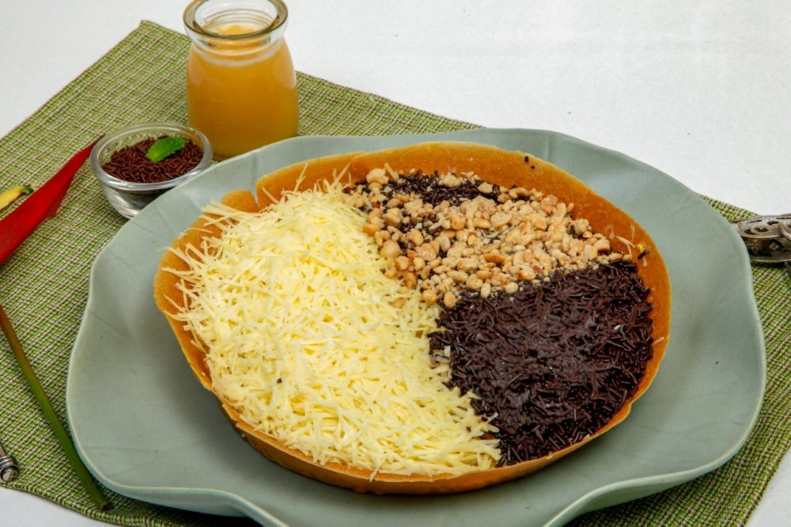

Sweet Martabak Recipes

Description
A very popular sweet treat that originates from Indonesia, the Murtabak - oftentimes also called Martabak - manis is a truly versatile dessert that can be enjoyed both savoury and sweet.
Ingredients:
- 500 g flour
- 2 eggs
- 120 g sugar
- 1 tsp yeast
- 1 tsp baking powder
- 1 tsp baking soda
- 20 g butter, melted
- 20 g milk powder
- ½ tsp salt
- 600 ml water
- 2 tsp sweet condensed milk (Optional topping)
- 2 tsp sugar (optional topping)
- 2 tsp chocolate sprinkle (optional topping)
- 2 tsp shredded cheddar cheese (optional topping)
Cooking Steps:
- In a large bowl, add flour, water, eggs, sugar, yeast, baking powder, baking soda, ½ tsp salt, melted butter and milk powder, and whisk until well combined.
- Bring up the whisk to check the consistency of the batter.
- Let the batter rest or sit for approximately an hour or two for the ingredients to blend well.
- In a thick non-stick frying pan on low heat, add 1 ladle of batter and spread it out evenly. Once the batter begins bubbling, sprinkle 1 tsp sugar and close with the lid until fully cooked. This takes about 8 minutes.
- A popular and indulgent choice of toppings for martabak manis in Indonesia includes chocolate, condensed milk, butter and shredded cheese - give any of these a go or make a filling of your own!
- Place on a plate or cutting board, brush the martabak with butter, and sprinkle toppings of your choice. Cut and serve hot!